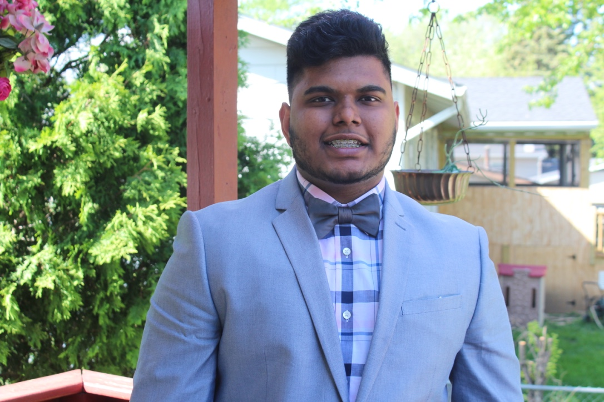

Educational and Work related background of Priyank Mithapara.

Education
I have recevied my high school diploma from Hoffman Estate High School. January 2014 was the year I joined Hoffman Estate and as of May of 2017, I graduated with a diploma.
August 2017 was when I joined William Rainey Harper College - a communited college located in Palatine. There I received my associate in science and arts as of May 2019.
Initially, I was started of as a pre-med student. Since high school, I was really eager to study medicine and become a surgeon. Therefore, I went to Loyola University starting of the fall semester in 2019. I had the idea of how long this process will take, but then I experienced it went to Loyola what's its like to be in a medical feild; moveover, I knew it then that this is not something I wanted to do.
As the spring semester of 2020, I transfered from Loyola to Illinois Instittue of Technology to major into Information Technology and Managment
Skills
Technology:
Programming language Beginner level - Java, Python, Linux and HTML
Hardware - Working on a project where we take apart a CPU and than rebuild it.
Other:
Languages - Fluent in English, Hindi and Gujarati.
Interpersonal Skills - Critical Thinking, Teamwork, Communication, Organization, Leadership, Time management and Problem Solving.
In Between the process of becoming a certified phlebotomist.
Volunteering Experience
St.Alexius Medical Center, Hoffman Estates, IL
Volunteered for more than 65 hours.
Worked around elderly patient who needed assistance to move from their room to a different location.
Guided visitors to the approprate room or places they have to go to in order to pick up their medicine
Generated and reviewed incident reports, including actualizing appropriate corrective action plan to mitigate ongoing and potential situations.
Friendship Village, Schaumburg, IL
Volunteered for 20 hours.
Guided and helped elderly residences to play bowling.
I and other volunteers, assisted and pass the bowling ball to the residences.
Onces they have rolled the ball, volunteers on the other side were picking the pins up and putting them back.